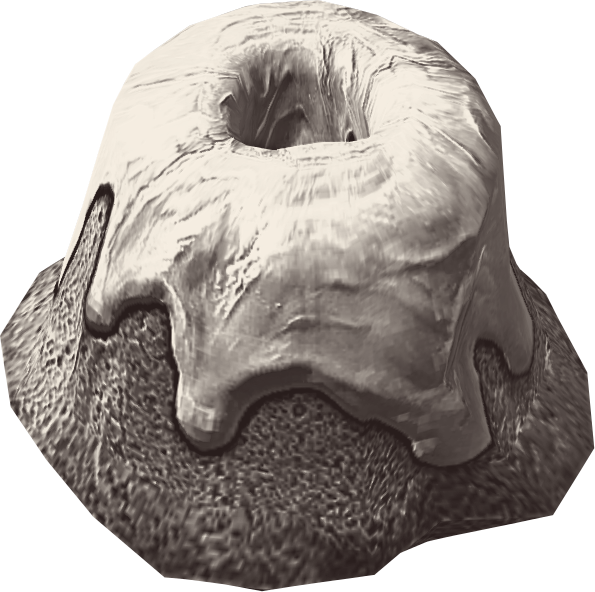

Asaldak's Sweetroll

Asaldak's sweetroll is not your average sweetroll. Made with moon sugar, this treat is sure to make ones fur stand on end
Ingredients
Sweetroll
- 1/2 tsp from Salt Pile
- 1/4 cup from Jug of Milk
- 2 cups from Sack of Flour
- 2 sticks (1 cup) of Butter
- 5 Chicken's Eggs
- 1 1/2 tsp Extract from Vanilla Plant
- 1 2/3 cups Moon Sugar
Glaze
- 4 TB Butter
- 2 TB from Jug of Milk
- 2 cups Powdered Moon Sugar
- 1 tsp Extract from Vanilla Plant
How-To
- Gather your ingredients and allow to reach room temperature. Preheat your hearth to 350 degrees F
- Cream the butter and sugar together and beat until fluffy (at least five minutes).
- lowly add in each chicken's egg and beat well. Add the milk or cream.
- Add the flour, salt and vanilla extract and stir gently until mixed.
- Pour into greased swell roll pans and bake until golden, about 20 minutes. Allow to cool.
- For the glaze, melt the butter and add in the milk.
- Slowly mix in the powdered sugar and vanilla. Drizzle over cooled sweet rolls.
Return home